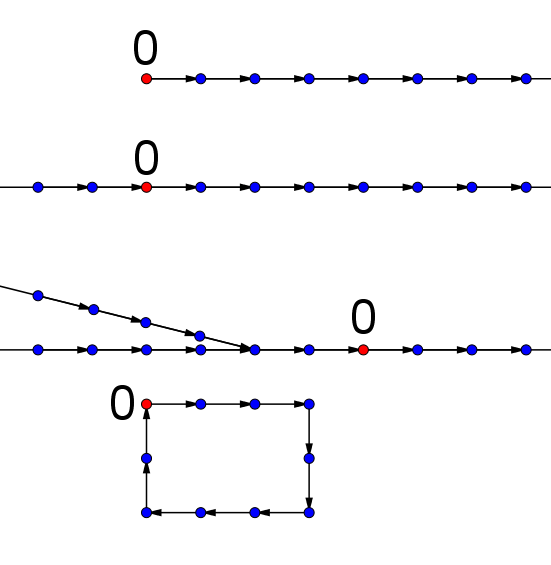
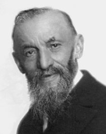
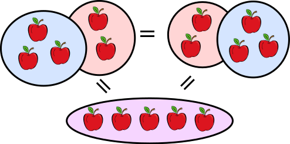
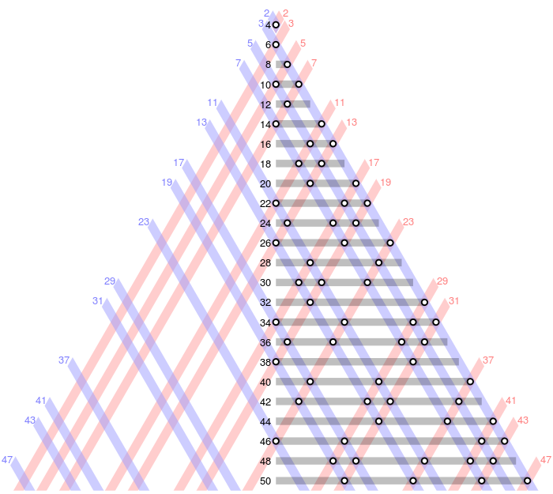

langages mathematiques
Langages mathematiques
Pourquoi 1 + 1 = 2 ?
Pour comprendre cette opération, il faut déjà comprendre la signification de chacun des symboles utilisés, les chiffres 1 et 2, et les opérateurs + et =
- 1
+=- 2
Ainsi, pour apprendre à compter à une machine, il faudra lui expliquer comment les nombres se succèdent, et quel rôle jouent chaque opérateur sur ces nombres.
Les chiffres
Les symboles des chiffres nous sont ainsi intuitifs, mais, dans l’idée d’une construction du langage mathématique, il doit exister une règle qui nous dit:
- que le successeur immédiat de 1, dans l’ensemble des entiers naturels, est le 2 et non le 3. (et qu’il existe aussi la notion de predecesseur)
- que le plus petit des entiers naturels est le 0
Cet article du site automaths détaille ainsi la construction de l’ensemble des entiers naturels par des axiomes.

Comment sont placés les successeurs pour

Giuseppe Peano (1858-1932)
l’égalité, ou l’identité =
L’identité est définie par 2 propriétés:
- a = b, b = c → a = c
- a1 = a2 → f(a1) = f(a2)
l’addition +
Voir l’article Qu’est-ce que ça veut dire additionner ? du site automaths.
On y lira que 0 + 1 = 1 est l’un des axiomes définissant l’addition, et s’écrit en langage axiomatique:
$$0 + S_0 = S_0$$
L'addition: la réunion de 2 ensembles
Questions
- Q1: Qui était Giuseppe Peano et qu’a-t-il cherché à montrer à propos des entiers naturels?
- Q2: Qui était le mathématicien Kurt Gödel, et qu’a-t-il apporté à la théorie sur le langage mathématique initiée par Giuseppe Peano? En particulier, ce que l’on appelle la complétude d’un système d’axiomes ?
- Q3: A quoi peut-on comparer un axiome mathématique? Y-a-t-il quelque chose d’équivalent dans les langues naturelles?
- Q4: Qu’est ce que l’addition +?
- Q5: Qu’est ce que l’égalité =? Commenter les 2 propriétés qui la définissent.
Conclusion
Les mathématiques sont formées:
- d’un ensemble de valeurs, comme par exemple l’ensemble des entiers naturels $\mathbb{N}$
- de relations entre les éléments de cet ensemble. Comme par exemple la relation de successeur vue plus haut.
- de règles sur ces valeurs. Ces règles définissent les opérateurs sur ces valeurs.
Dans le chapitre suivant, on verra que l’on peut créer un langage mathématique pour le traitement de l’information.
Calcul propositionnel
On va avoir besoin d’ajouter aux ensembles de nombres un nouvel ensemble particulier: un ensemble contenant 2 éléments contenant les valeurs de verité vrai / faux. Cela nous permettra d’utiliser des machines pour automatiser le raisonnement. C’est à dire pour produire des démonstrations, et ainsi de prouver des propositions.
Le calcul propositionnel est un ensemble de règles permettant un nombre fini d’étapes pour démonter si une proposition est VRAIE ou FAUSSE.
Les Propositions contiennent des affirmations telles que:
- le moteur est en marche
- la vanne de sécurité est ouverte
- la cuve fuit, etc…
On remplace ces affirmations par des symboles neutres, qui prennent l’un des 2 états: VRAI ou FAUX. Cet état est choisi pour établir une certaine cohérence avec l’information à traduire du monde exterieur (moteur en marche = VRAI, …)
Les propositions vont combiner ces affirmations à l’aide d’opérateurs logiques. Cela va constituer une formule.
Une propriété faisant intervenir n éléments offre $2^n$ interprétations envisageables.
La formule doit prendre les valeurs VRAI pour toutes les interprétations de l’énoncé.
Dans ce paragraphe, on étudie les propositions en tant que telles, et les liens qui peuvent exister entre elles, sans se préoccuper du contenu de ces propositions.
On rappelle qu’une proposition est un énoncé pouvant être Vrai ou Faux. On dit alors que les deux valeurs de vérité d’une proposition sont « vrai » et « faux ».
Equivalence logique
Définition
Deux propositions équivalentes P et Q sont deux propositions ayant les mêmes valeurs de vérité.
Cette phrase peut se visualiser dans un tableau appelé table de vérité dans lequel on fait apparaître les différentes valeurs de vérité possibles pour le couple (P, Q) (Vrai et Vrai, Vrai et Faux, …) et, en correspondance, les valeurs de vérité de la proposition P ⇔ Q. Ainsi, la table de vérité de l’équivalence logique P ⇔ Q est :
| P | Q | P <=> Q |
|---|---|---|
| F | F | V |
| F | V | F |
| V | F | F |
| V | V | V |
On peut ainsi lire, deuxième ligne, que si P est vraie et Q est fausse, P ⇔ Q est fausse. L’équivalence logique joue pour les propositions, le rôle que joue l’égalité pour les nombres. Les expressions 3 + 2 et 5 ne sont pas identiques et pourtant on écrit 3+2 = 5. De même, les propositions (x2 = 1) et (x = 1 ou x = −1) ne sont pas identiques et pourtant on écrit (x2 = 1) ⇔ (x = 1 ou x = −1).
Implication
Definition
Si P et Q sont deux propositions, on définit l’implication logique : P ⇒ Q par sa table de vérité.
| P | Q | P => Q |
|---|---|---|
| F | F | V |
| F | V | V |
| V | F | F |
| V | V | V |
P et Q deux propositions. (P ⇒ Q) ⇔ (nonP ∨ Q). P ⇒ Q est fausse dans l’unique cas où P est vraie et Q est fausse: si P (est vraie) alors forcément Q (est vraie aussi). Mais pas réciproquement.
Exemple: Lorsque le facteur dépose une lettre, le chien aboie. Parmi les interprétations envisageables pour cet énoncé, il se peut que le chien aboie alors que le facteur n’a PAS deposé de lettre.
Négation d’une proposition
Soit P une proposition. On définit sa négation, notée nonP (ou ⌉P), à partir de sa table de vérité.
| P | nonP |
|---|---|
| V | F |
| F | V |
Exemple: Je ne lave pas mon linge (nonL ou -L) s’il pleut (P)
On peut exprimer cette proposition à partir des affirmation L (je lave mon linge) et P (il pleut), à l’aide de l’opérateur implication => :
$$P \Rightarrow -~L$$Les connecteurs logiques « ET » et « OU »
Soient P et Q deux propositions. On peut définir les propositions « P ou Q », notée P ∨ Q, et « P et Q », notée P ∧ Q par les tables de vérité ci-dessous.
| P | Q | P ∧ Q | P ∨ Q |
|---|---|---|---|
| F | F | F | F |
| F | V | F | V |
| V | F | F | V |
| V | V | V | V |
Remarque: Le connecteur logique OU n’a pas le sens du OU exclusif. En effet, on peut voir que lorsque P est vraie et Q est vrai, alors P∨Q est vraie
Combinaisons de propositions
Tout énoncé peut s’écrire en utilisant uniquement la conjonction ∧ et la négation (par exemple, P ⇔ Q est la proposition non(P ∧ nonQ) ∧ non(Q ∧ nonP)). Ce résultat a une importance en électronique et en informatique.
Un problème mathématique
En classe de mathématiques, un problème mathématique comprend un énoncé (la description d’un situation) suivi d’une ou plusieurs questions. Il est généralement demandé pour répondre aux questions posées d’effectuer des calculs avec les données contenues dans l’énoncé.
Toute question ne peut pas forcément s’énoncer dans un langage mathématique.
En informatique, pour un problème donné, on cherche à trouver une procédure pour le résoudre. On doit pouvoir traiter cette procédure à l’aide d’une machine. Si cette procedure existe, et si le nombre d’actions réalisées par la machine n’est pas infini, alors le problème peut être résolu. (fonction calculable selon les données de l’énoncé).
Exercices sur les procédures de calcul
Ex 1: Trouver une procédure pour calculer 2 + 3
On utilisera uniquemement les propositions suivantes:
- les entiers naturels s’expriment selon la théorie axiomatique vue en classe: SS0 succede à S0 qui succede à 0…
- définitions axiomatique de l’addition
- variables
On considère qu’il existe une fonction d’affichage
Ex 2: Trouver une procédure pour calculer 3 - 2
Mêmes outils que pour l’exercice 1. La relation de prédecesseur est également connue.
Exercices sur le calcul propositionnel
Exercice 1: Le Soleil brille
En utilisant les affirmations S (le soleil brille), P (il pleut), B (il bruine), A (il y a un arc en ciel), O (il a un vent d’Ouest), E (il y a du vent d’Est), traduire dans la logique des propositions suivantes:
- La bruine est une forme de pluie.
- S’il pleut et que le soleil brille en même temps, alors il y a un arc en ciel.
- Si le vent d’ouest amène la pluie, on n’a jamais vu qu’un vent d’est soit porteur de pluie.
Exercice 2:
Représenter dans le formalisme de la logique des propositions les théorèmes de géométrie suivants:
- Si un triangle est équilatéral alors il est isocèle.
- Un triangle rectangle n’est jamais équilatéral. Un carré est à la fois un parallélogramme et un rectangle.
- Un losange n’est ni un quadrilatère rectangle ni un triangle.
Exercice 3:
Lors de ses aventures au pays des merveilles rapportées par Lewis Carroll, Alice est souvent accompagnée par le chat de Cheshire. Ce félin énigmatique s’exprime sous la forme d’affirmations logiques qui sont toujours vraies. Alice se trouve dans un corridor dont toutes les portes à sa taille sont fermées. La seule porte ouverte est nettement trop petite pour qu’elle puisse l’emprunter. Une étagère est fixée au-dessus de cette porte. Le chat dit alors à Alice: «L’un des flacons posés sur cette étagère contient un liquide qui te permettra de prendre une taille plus adéquate. Mais attention, les autres flacons peuvent contenir un poison fatal.»
Trois flacons sont effectivement posés sur l’étagère. Le premier est rouge, le second jaune, le troisième bleu. Une étiquette est collée sur chaque flacon. Alice lit l’inscription figurant sur chaque étiquette:
- Flacon rouge: le flacon jaune contient un poison; le bleu n’en contient pas;
- Flacon jaune: si le flacon rouge contient un poison, alors le bleu aussi;
- Flacon bleu: je ne contiens pas de poison.
Nous noterons R, J et B les variables propositionnelles correspondant au fait que les flacons rouge, jaune et bleu contiennent un poison.
Nous noterons $I_R$, $I_J$ et $I_B$ les propositions correspondant aux inscriptions sur les flacons rouge, jaune et bleu.
On résoudra les questions suivantes en utilisant une table de vérité.
Exprimez les formules $I_R$, $I_J$ et $I_B$ sous la forme de formules dépendant de R, J et B.
- Les inscriptions sur les trois flacons sont-elles compatibles?
- Si les trois inscriptions sont vraies, est-ce qu’un ou plusieurs flacons contiennent un poison?
- Dans le cas où aucun des trois flacons ne contient un poison, est-ce qu’une ou plusieurs inscriptions sont fausses?
Enoncé d’origine (issu du site emse.fr
- Flacon rouge: le flacon jaune contient un poison; le bleu n’en contient pas;
- Flacon jaune: si le flacon rouge contient un poison, alors le bleu aussi;
- Flacon bleu: je ne contiens pas de poison, mais au moins l’un des deux autres si.
Compléments sur les Mathématiques
- notes issues d’un cours d’Université math.UNICE
Les mathématiques actuelles sont bâties de la façon suivante :
- on part d’un petit nombre d’affirmations, appelées axiomes, supposées vraies à priori (et que l’on ne cherche donc pas à démontrer) ;
- on définit ensuite la notion de démonstration (en décidant par exemple de ce qu’est une implication, une équivalence…) ;
- on décide enfin de qualifier de vraie toute affirmation obtenue en fin de démonstration et on appelle « théorème » une telle affirmation (vraie). A partir des axiomes, on obtient donc des théorèmes qui viennent petit à petit enrichir la théorie mathématique. En raison des bases (les axiomes) non démontrées, la notion de « vérité » des mathématiques est sujette à débat.
Axiome. Un axiome est un énoncé supposé vrai à priori et que l’on ne cherche pas à démontrer. Ainsi, par exemple, Euclide a énoncé cinq axiomes (« les cinq postulats d’Euclide »), qu’il a renoncé à démontrer et qui devaient être la base de la géométrie (euclidienne). Le cinquième de ces axiomes a pour énoncé : « par un point extérieur à une droite, il passe une et une seule droite parallèle à cette droite ».
Aujourd’hui, ces axiomes constituant le langage mathématique traitent tous les signes mathématiques et logiques, et jouent un rôle analogue à celui de la grammatisation dans les langues naturelles.
Proposition (ou assertion ou affirmation). Une proposition est un énoncé énoncé auquel on peut attribuer une valeur de vérité vrai ou faux. Par exemple, « tout nombre premier est impair » et « tout carré de réel est un réel positif » sont deux propositions. Il est facile de démontrer que la première est fausse et la deuxième est vraie. Le mot proposition est clair : on propose quelque chose, mais cela reste à démontrer. Une proposition est construite à partir des axiomes du langage.
Théorème. Un théorème est une proposition vraie (et en tout cas démontrée comme telle). On utilise aussi en informatique le terme d’assertion pour une proposition vraie.
Définition: souvent équivalent à axiome
Conjecture: proposition que l’on suppose vraie sans parvenir à la démontrer. (et qu’il est peut être impossible de démontrer).
Voici la liste des plus célèbres conjectures Pour exemple, la conjecture de Goldbach
Tout nombre entier pair supérieur à 3 peut s’écrire comme la somme de deux nombres premiers.

Illustration de la
Liens
- Article sur la construction des ensembles, site automaths
- Cours math UNICE
- Raisonnement et logique propositionnelle cours et article de Zanotti